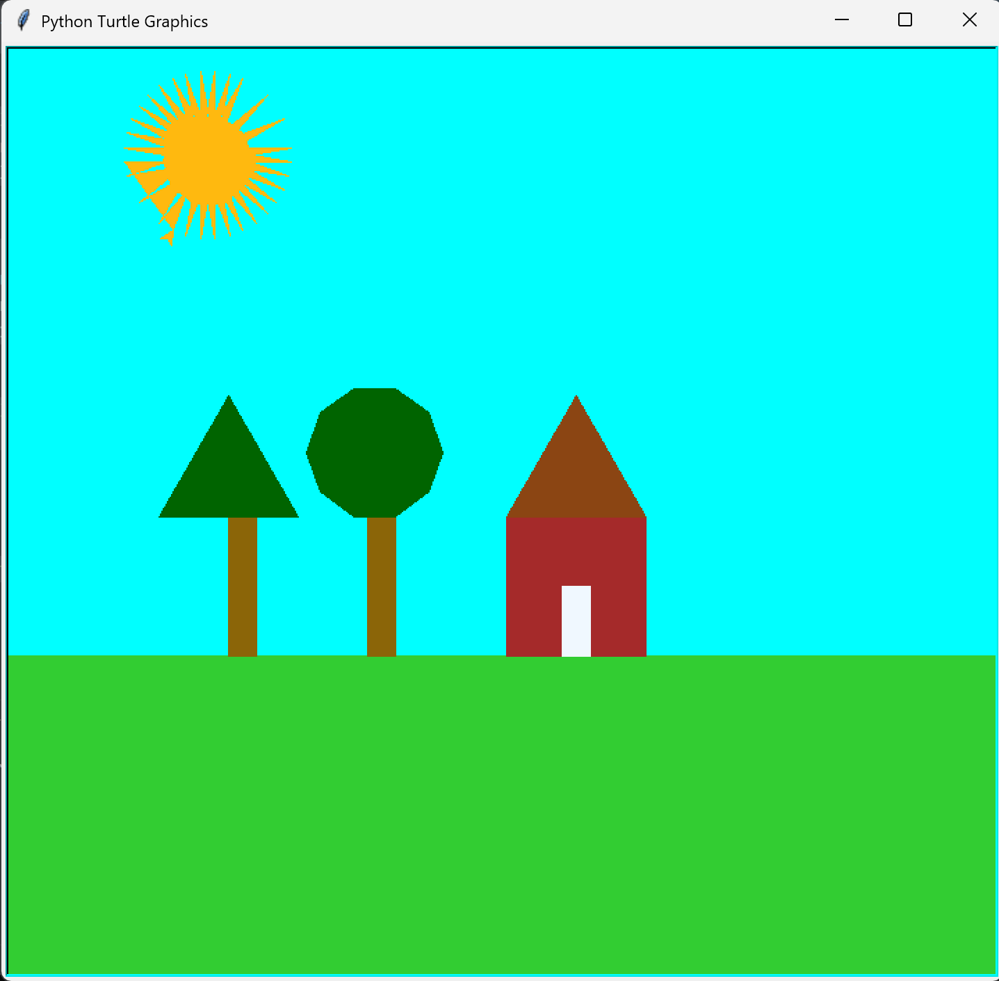

This project was created in my computer science class using Python’s Turtle graphics library. The goal was to build a full outdoor scene using only code. I used loops, conditionals, positioning, colors, and shapes to create grass, a house, trees, and a sun.
The final program generates a bright outdoor landscape with a sky-blue background, green grass, a brown house with a triangular roof, two trees with trunks and leaves, and a bright sun with rays. Each object was drawn using loops and coordinate positioning.

from turtle import *
speed(0)
bgcolor("aqua")
current_y = position()[1]
if current_y < 0:
color("green")
else:
color("limegreen")
penup()
goto(-400, -100)
pendown()
begin_fill()
forward(800)
right(90)
forward(400)
right(90)
forward(800)
right(90)
forward(400)
end_fill()
penup()
goto(0,-100)
pendown()
color("brown")
begin_fill()
right(90)
for i in range(4):
forward(100)
left(90)
end_fill()
penup()
goto(0,0)
pendown()
color("chocolate4")
begin_fill()
for i in range(3):
forward(100)
left(360/3)
end_fill()
penup()
goto(40,-100)
pendown()
color("aliceblue")
begin_fill()
for i in range(2):
forward(20)
left(90)
forward(50)
left(90)
end_fill()
done()